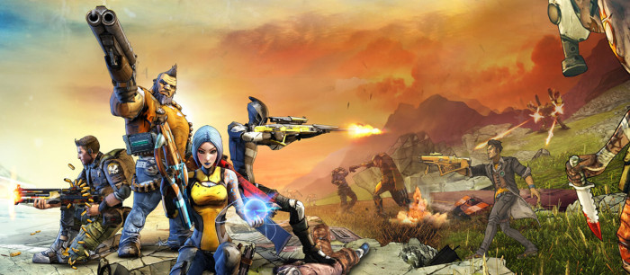
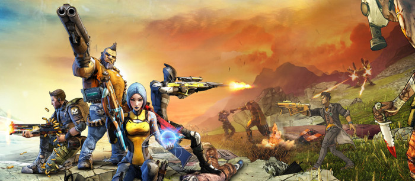
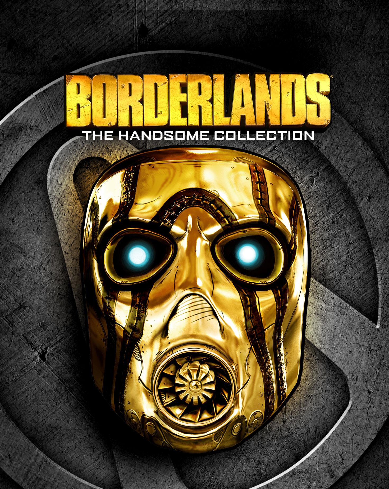

Homepage
 



Reviews
Borderlands The Handsome Collection
| 
|
|
|---|---|
Borderlands The Handsome Collection, includes remastered versions of Borderlands 2 which originally released in 2012 and Borderlands The Pre-Sequel which was released in 2014. The collection also comes with all the downloadable content that has been released for both games. Borderlands is all about the stories, the classic hero’s vs villains, weapons and looting treasures. Both games start by you choosing from 4 different characters (Vault Hunters) who each have their own special skill sets and abilities, each Vault Hunter is powerful in their own way. Overall, I really enjoyed this game a lot, it has variety of content to play through as it includes two different games. This could be seen as too much content, which may lead other players to become bored easily as the games can be repetitive, however this was not the case for me. |
Dying Light

| |
|---|---|
Dying light is a classic zombie survival game with a parkour twist. The main form of transport is using the environment around you such as rooftops to invade and escape enemies. The main character you play as is a survivor called Kyle Crane, where you have the freedom to either complete the main story quests, complete side quests or ultimately explore the wide map and create your own adventure. I found this game to be very enjoyable, and kept me interested throughout, by surprising plots and sub-plot twists. A fun part of this game was using the zip wire to move from building to building, this zip wire is later unlocked by completing certain missions. |
FIFA 17

| |
|---|---|
FIFA 17 is a football simulation game. The main criticism the FIFA series get is that the newest one to always the same as the previous one with minor changes. However, for this year’s release, FIFA 17 is powered by a new Frostbite engine, which has allowed the introduction of the new game mode never seen on the FIFA series before, The Journey, which follows the life of upcoming football star in the Premier League. One thing I really like about FIFA in general, is that there are so many different game modes to play within the game. These include Ultimate Team, Career Mode, Pro Clubs and many more. My favorite to play is Pro Clubs which allows up to 22 different players to play at once each with their own player on the pitch in their relevant position. |
Uncharted 4 A Thief's End

| |
|---|---|
Unchated 4: A Thief's End, is one of my favorite games ever, the whole uncharted series is probably my favorite gaming series ever made. Throughout the series, you play as an explorer/treasures hunter Nathan Drake, each game is a new adventure for Nathan. Uncharted 4 takes place after action packed events in the 3rd game, in which Drake takes on a Malaysian Salvaging Job with his brother. The graphics for this game are amazing, which is complemented by the smooth gameplay which really make this game feel special. The thing that stood out for me within this title compared to the others is that Drake always had a partner with him which allowed the game dialog to include humorous comments which added to the enjoyment of the game. |
About Me

My name is Viraj Kantharia, I am currently studying Information Communication Technology (ICT) at De Montfort University. I designed this website for a module on my course and I decided to base it around video games.
Video games are a big part of my life, and I am very passionate about videogames and play them most days of the week.
I chose to use this project, to voice my opinion and review a few videogames I have played within the last year and hopefully get my points across about these games.